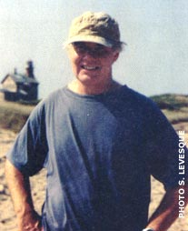

President, Chelsea Green Publishing Company
How did we become a nation of manicured, toxic lawns? How did a lowly perennial that imitates a carpet become our dominant ground cover? My personal theory (I make it personal to avoid the rigors of research or fact finding) traces the perfect lawn back to World War II. Our boys returned from the Big One with expectations of peace, prosperity and perfection. This vision included a trophy wife and perfect children nestled in a neat suburban home, surrounded by a flawless lawn with a picket fence. Peace reigned, and since the big enemies - Hitler and Yamamoto - had been vanquished, only crabgrass remained.
Grass is an inoffensive perennial that is minimally decorative, inedible, provides no shade and attracts only the "wildlife" that sustains itself on kegs of beer. It is also overwhelmingly the ground cover of choice in North America. Its virtue is its uniformity: This is the Marine haircut of the plant world.
But why do we grow lawns in regions intended for cactus and Gila monsters? Why are there golf courses in Phoenix? Whose idea of sanity is it to pump fresh water from ancient aquifers so we can make the desert look like a rain forest? And why do we nurture our lawns with water and fertilizers so we can attack it with an arsenal of lawn tractors, weed whackers, bazookas and mortars. On Sunday afternoons, our neighborhoods sound like war zones.
We're living the American Dream, internal combustion style, but the dream has to change. We're using up the oil, using up fresh water; we're putting the waste into the air we breathe. If you want to do something about the situation, take a look at your own back yard. If it's covered with grass, you have an opportunity to take dramatic and effective environmental action by joining the revolution to lose your lawn.
I signed on after reading a delightful manifesto by Toby Hemenway called Gaia's Garden: A Guide to Home-Scale Permaculture. Permaculture works with the ecosystem to maintain permanent horticulture by rely ing on renewable resources. Hemenway shows that by treating nature as an ally instead of an enemy, you can create a beautiful, productive, ecological garden in your own back yard. Hemenway takes the teachings of permaculture pioneers David Holmgren and Bill Mollison and makes them accessible to the average person. The result is deceptively simple, beguiling and completely revolutionary. It makes such sense you'll never look at lawn care or gardening the same way again.
The natural world is neither flat nor rectangular; not uniform, but diverse, with plants grouped in complementary ways that fill ecological microniches. In Gaia theory - Gaia being the Greek Earth goddess - the world is treated as an interconnected and interdependent system. In such a garden, cultivation mimics the layers of growth in a forest. From roots to treetops you select plants to play mutually supporting roles in a rich system.
Getting from here to there is not as difficult as you might imagine. You do not have to dig up your yard with a backhoe or pulverize the sod with a rototiller. If you are patient, you can just do nothing. In a few years natural processes will restore biodiversity to your back yard. You can speed the process, however, by following Hemenway's advice.
As with all new ideas, the lose-your-lawn movement will be threatening to some. We've been conditioned to distrust things that don't require motors, medicine or pasteurization. Millions of marketing dollars have been spent to perpetuate the myth that a weed-free lawn, along with even teeth and 2.1 children, is essential to happiness.
We are still firmly ensconced in an age when our species removes any impediment to comfort by using more power. Too hot? Too cold Just add power. Need to go higher? Faster? Step on the accelerator, unleash power. The size of our lawns, once limited by our time, energy and patience for pushing a mower, has grown in direct relation to the horsepower of our lawn tractors.
Permaculture advocates challenge myth by offering delightful and superior alternatives. Build the soil. Add organic material. Plant perennials. The choices are infinite as long as you embrace the one inviolable principle: You must work with, not against, natural processes.
If this revolution succeeds, our back yards will become mini-nature preserves offering beauty, harmony and delicious food. Sunday afternoons will be for relaxing to the sounds of songbirds, not the roar of warfare waged on grasses. With organic produce growing in your back yard, your food bills will go down and your health will improve.
The revolution is barely a conspiratorial whisper now. However, I believe a new sto ry is emerging - that we can embrace, not conquer, nature in our own back yards.
|
 Publisher Stephen Morris envisions a future in which lawns will look like nature instead of green carpets. |
|
|